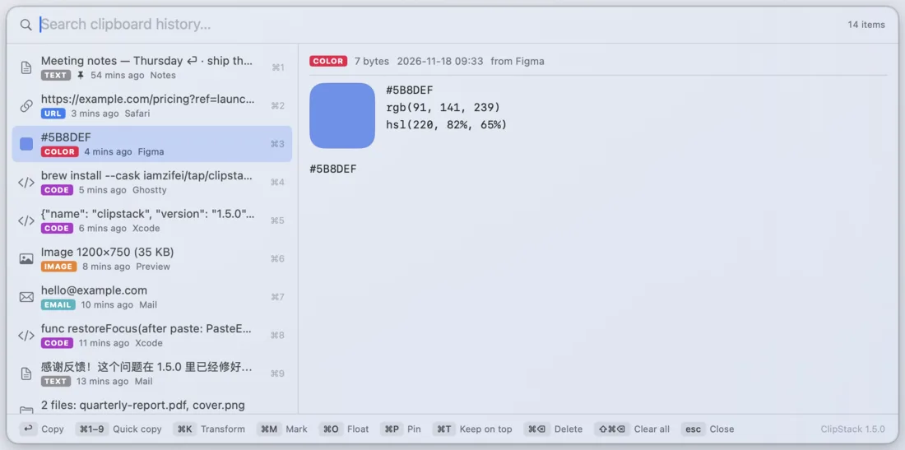
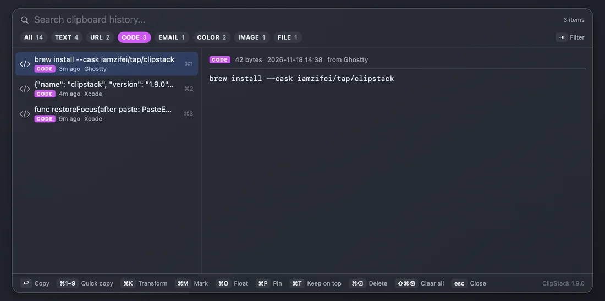
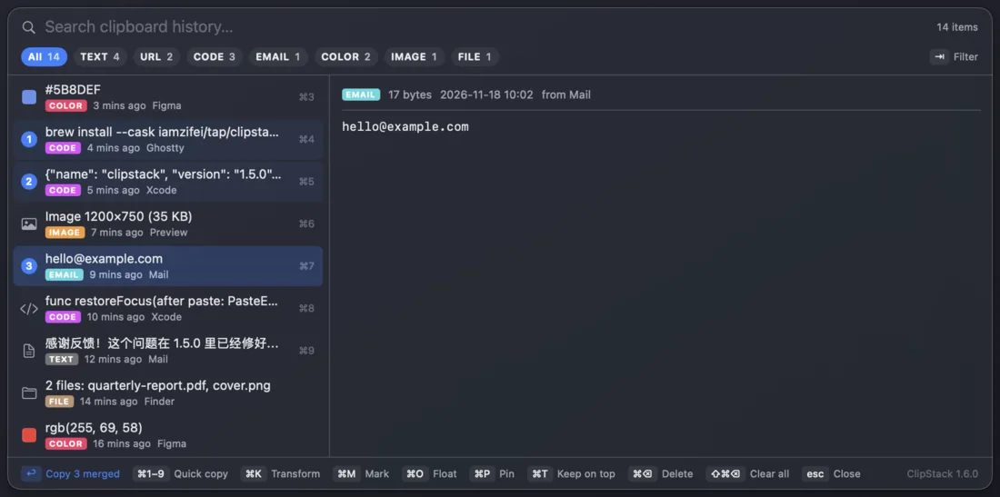
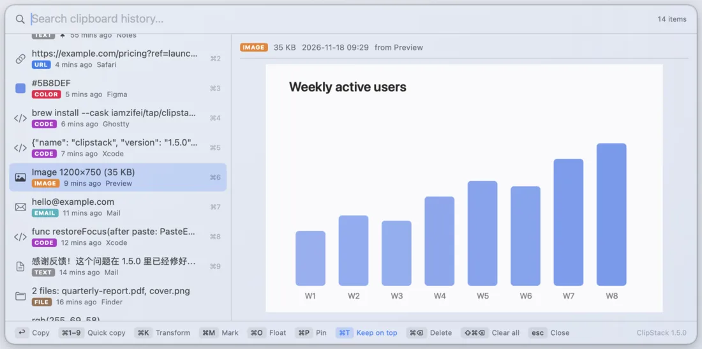

Search it, do not scroll it
Start typing and the list narrows as you go, Chinese input included. Arrow keys move the selection, ⌘1–9 grabs one of the first nine outright, and Return copies the selected entry and closes the panel.

 ClipStack for macOS
ClipStack for macOS
macOS remembers exactly one thing you copied. ClipStack keeps the rest — text, images and files — in a searchable panel that opens over whatever you are doing, previews the full contents, and puts the one you want back on the clipboard with a single keystroke.
macOS 14 or later · Apple silicon · MIT licensed · about 3000 lines of Swift, no dependencies
Real history, invented on purpose: every entry in this recording is demo data.
Copy three things in a row and all three are waiting — not just the last one.
Start typing and the list narrows as you go, Chinese input included. Arrow keys move the selection, ⌘1–9 grabs one of the first nine outright, and Return copies the selected entry and closes the panel.
Every row carries a tag — TEXT, URL, EMAIL, CODE, COLOR, IMAGE, FILE — so you can spot the link or the snippet by its shape before reading a word. A copied colour shows its swatch, with HEX, RGB and HSL side by side in the preview.

A row of chips under the search field counts each type in your history. Tab steps to the next one and ⇧Tab back, or click a chip; it combines with search, and esc clears it. Handy when the URL you want is buried under forty snippets.

⌘K opens a menu built for the selected entry: change case, trim, join lines, format or minify JSON, URL-encode or decode. A colour converts between HEX, RGB and HSL, and a screenshot gives up its text through on-device OCR. The result is copied and kept as a new entry.

⌘M or ⌘-click marks entries, and each mark shows its number. Return then copies them all as one block, one per line, in the order you marked them.

⌘O turns the selected entry into its own small window that floats above everything. Open as many as you need, drag them next to the form you are filling in, and copy from each with one click.

Rich text keeps its formatting, images stay images, and files copied in Finder come back as files. The preview pane on the right shows the whole thing before you commit to it — not a truncated line.
⌘T pins the panel above every window and stops it closing when it loses focus or after a copy. It becomes a reference card you read from while typing somewhere else — the state survives a restart.

⌘P pins an entry to the top of the list and out of the way of the 300-entry limit, so the snippet you paste ten times a day never falls off the end.

History lives in a plain folder in your Library and goes nowhere else. There is no account, no sync, no analytics and no network call except the update check.
Anything a password manager marks as concealed or transient is never recorded, following the nspasteboard.org convention — so the password you just copied does not end up in a list.
Out of the box ClipStack needs no permissions at all. Two optional settings — paste straight into the app you came from, and hold ⌘ and tap V to cycle history — use macOS Accessibility, and nothing asks for it until you switch one on.
Also from the same hand